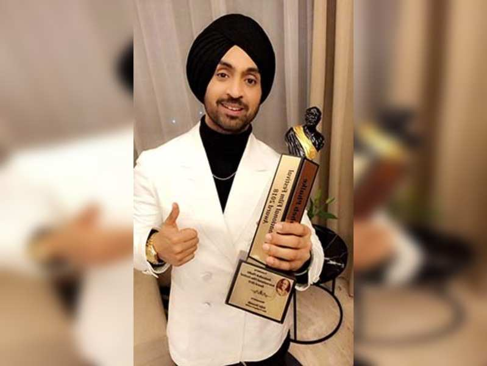

His Achievements
(From the year 2010 - 2018)
2010:
PTC Punjabi Music Awards - Best Folk Pop Album for the album "The Next Level".
PTC Punajbi Film Award - Most Popular Song of the Year for the song "Lak 28 Kudi Da".
2012:
Punjabi International Film Academy Award - Best Actor for the "Jihne Mera Dil Luteya".
PTC Punjabi Film Awards for Best Actor for "Jihne Mera Dil Luteya".
2013:
PTC Punjabi Film Awards - Best Actor for the film "Jatt & Juliet".
PTC Punjabi Music Award - Best Bhangra Song of the Year & Best Pop Vocalist Male for the song "Kharku".
Brit Asia TV Music Awards - Best Album of the Year for the album "Back 2 Basics".
2014:
PTC Punjabi Film Awards - Best Actor for "Jatt & Juliet 2".
PTC Punjabi Music Award - Best Pop Vocalist Male & Most Popular Song of the Year for the song "Proper Patola".
2015:
PTC Punjabi Film Award - Most Popluar Song of the Year for the song "Happy Birthday".
Mirchi Music Award - Listeners' Choice Film Song of the Year for the song "Swaah Banke".
Mirchi Music Award - Film Album of the Year & Listeners' Choice Film Album of the Year for the film "Punjab 1984".
PTC Punjabi Music Award, Brit Asia TV World Music Award, Mirichi Music Award - Best Pop Vovalist Male for a Single.
Best Bhangra Song of the Year, Best Single World Best Male Act, Song of the Year - Non Film for the song "Patiala Peg".
2016:
PTC Punjabi Film Awards - Most Populat Song of the Year for the song "Veervaar".
PTC Music Award - Most Popluar Song of the Year & Best Bhangra Song of the Year for the song "5 Taara".
2017:
Filmfare Award - Best Debut Actor Male for the film "Udta Punajb".
Filmfare Punjabi Award - Best Actor Male for the film "Ambarsariya".
Best Playback Singer (Male) for the song "Mitran Da Junction" (Sardaarji 2).
2018:
Dadasaheb Phalke Award for the Most Trending Personality of the Year.
**REF: https://timesofindia.indiatimes.com/entertainment/punjabi/movies/news/diljit-dosanjh-bags-dadasaheb-phalke-award/articleshow/63899208.cms
**NOTE: Along with these, He has many other awards, honours, and achievements to his name.**